# Start a git repository on the "main" branch
git init -b mainQuarto is a new tool developed by RStudio (the company, not the program) to create a more ‘what you see is what you get’ editor for creating markdown files and products (e.g., books, websites, etc.). Additionally, it includes a visual editor that allows users to insert headings and embed figures via buttons that are intuitively labeled rather than through somewhat arcane HTML text or symbols. While Quarto is still in its infancy, it is rapidly gathering a following due to the aforementioned visual editor and for the ease with which quarto documents and websites can be created.
Prerequisites
To follow along with this tutorial you will need to take the following steps:
Feel free to skip any steps that you have already completed!
Create a Quarto Website R Project
To begin, click the “Project” button in the top right of your RStudio session.
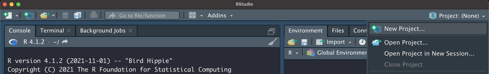
In the resulting dialogue, click the “New Directory” option.

From the list of options for project templates, select “Quarto Website”.
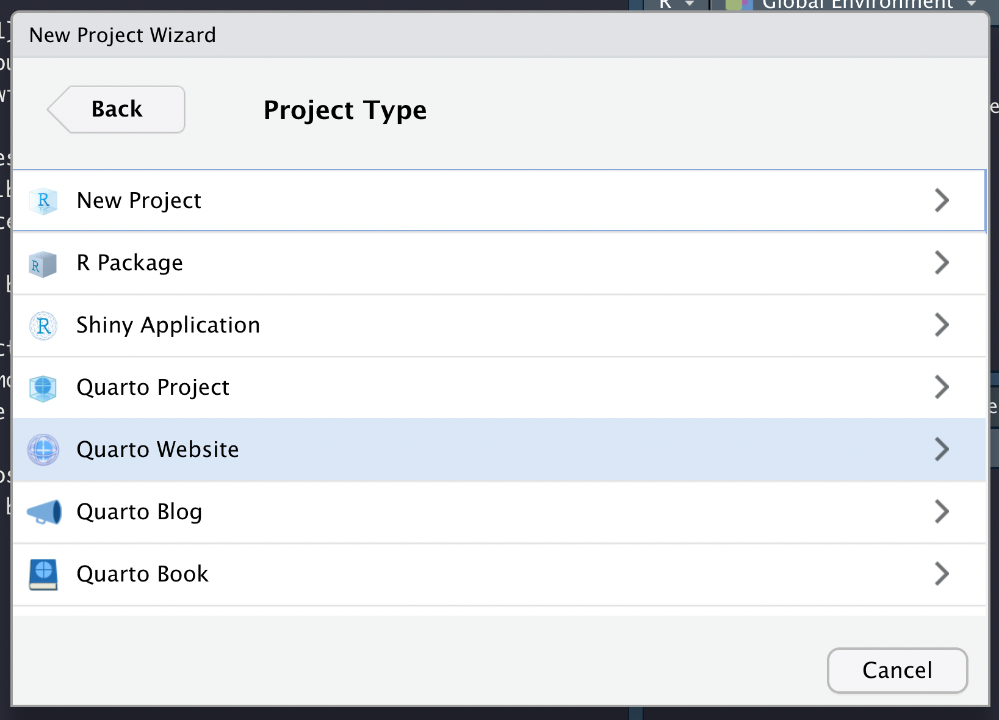
Pick a title and check the “Create a git repository” checkbox. For your title, short but descriptive titles are most effective. Once that is done, click “Create Project” in the bottom right of the window.
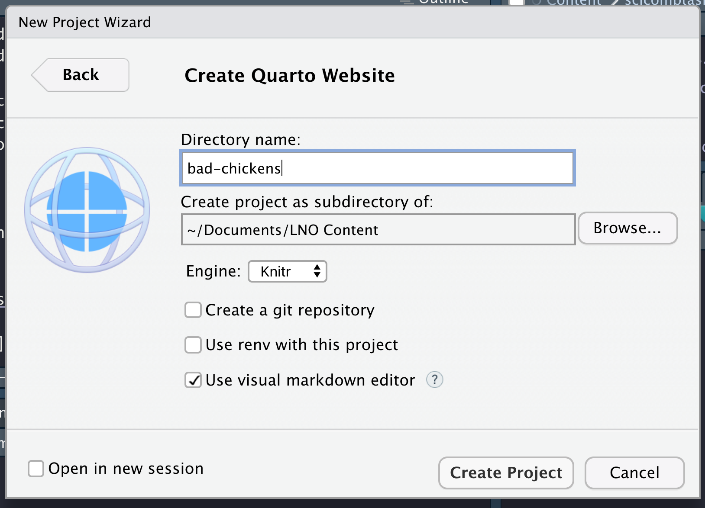
After a few seconds, RStudio should refresh with a Quarto document (such documents have the file extension “.qmd”) and a “_quarto.yml” file open.
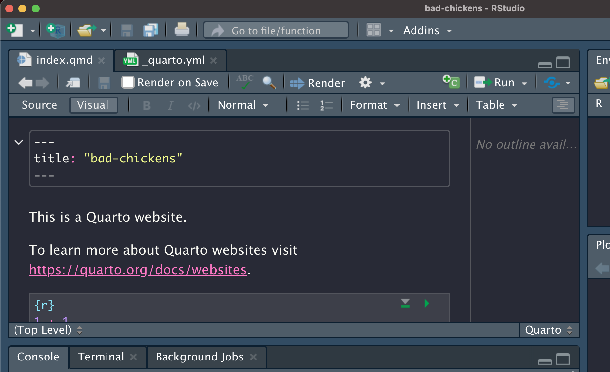
Part of Quarto’s central philosophy is that all of the formatting of individual .qmd files in a project is governed by the settings created by a singular .yml file. In an R markdown project some of the global settings are set in .yml but other settings are handled within each .Rmd file. This centralization is a key innovation in streamlining projects and is one reason for Quarto’s quick popularity.
Preparing Project for Web Deployment
To prepare your project for web deployment via GitHub Pages, we have three quick steps that we must first complete.
First, in the “_quarto.yml” file, add output-dir: docs as a subheading beneath the project: heading. Make sure that the indentation is the same as the type: website but the new line can be either above or below that line.
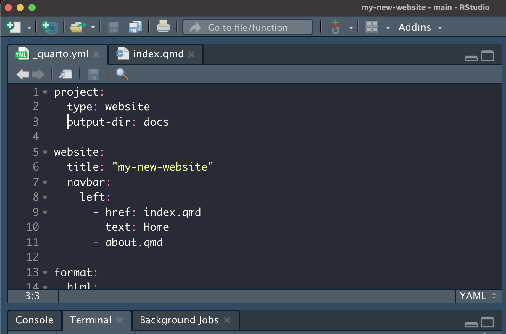
Second, in the “Terminal” pane run touch .nojekyll. This creates a file called “.nojekyll” that is necessary for hosting your website via GitHub Pages.
Third, in the “Terminal” pane run quarto render. This processes the template .qmd files you currently have in the repository and prepares them to become actual web pages.
Once you’ve done these three things you can move on to creating a GitHub repository so that we can take the necessary steps to having GitHub host your website!
Make a New GitHub Repository
From your GitHub “Repositories” tab, click the green “New” button.
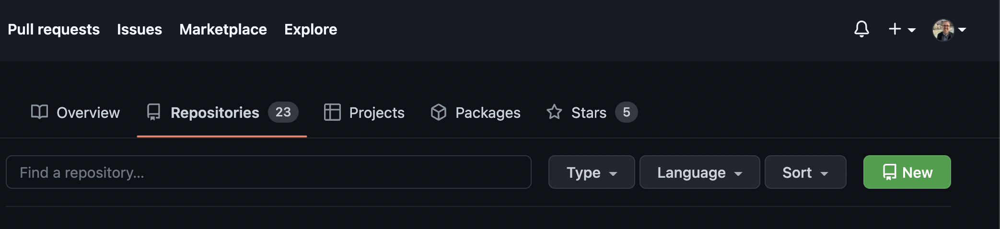
Add a title to your repository and add a description. Once you’ve added these two things, scroll down and click the green “Create repository” button.
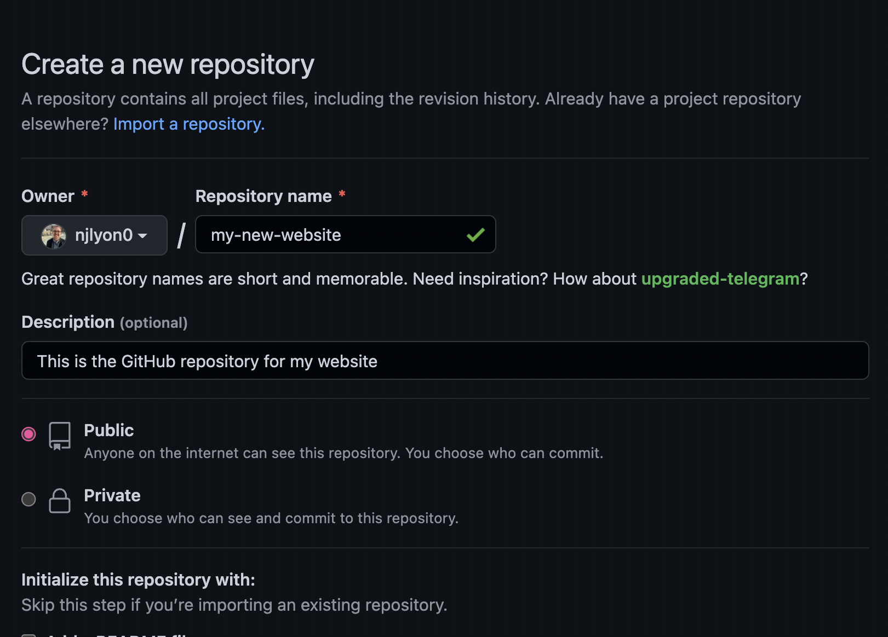
Be sure that you do not add a README, do not add a gitignore, and do not add a license. Adding any of these three will cause a merge conflict when we link the project that you just created with the GitHub repository that you are in the process of creating.
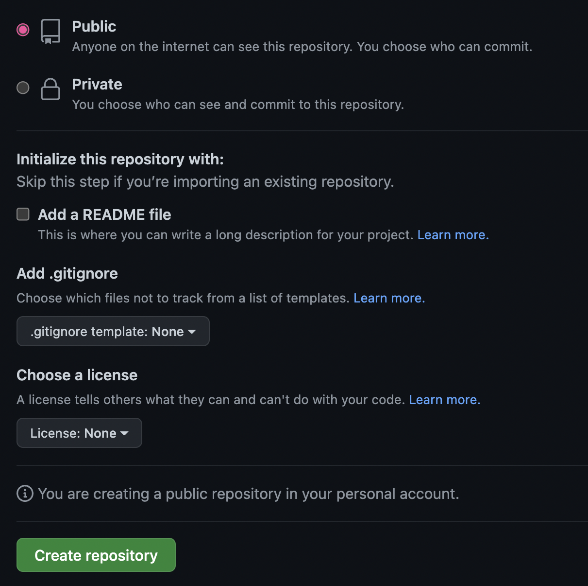
After a few seconds you should be placed on your new repository’s landing page which will look like the below image because there isn’t anything in your repository (yet).
Copy the link in the field and go back to your RStudio session.
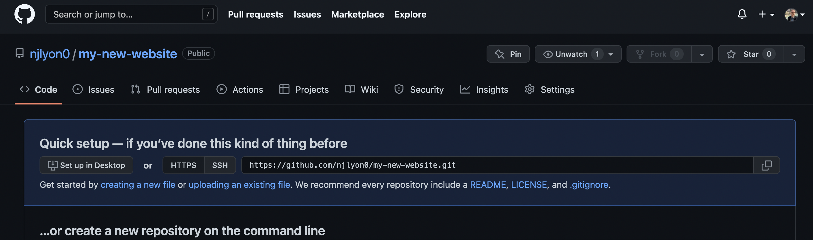
Adding your Project to GitHub
The following steps include a sequence of command line operations that will be relayed in code chunks below. Unless otherwise stated, all of the following code should be run in “Terminal”.
If you didn’t check the “Create a git repository” button while creating the R project, you’ll need to do that via the command line now. If you did check that box, you should skip this step!
Stage all of the files in your project to the git repository. This includes the .yml file, all .qmd files and all of their rendered versions created when you ran quarto render earlier. This code is equivalent to checking the box for the files in the “Git” pane of RStudio.
# Stage all files
git add .Once everything has been staged, you now must commit those staged files with a message.
# Commit all files with the message in quotes
git commit -m "Initial commit"Now that your project files have been committed, you need to tell your computer where you will be pushing to and pulling from. Paste the link you copied at the end of the “Make a New GitHub Repository” into the code shown in the chunk below (inside of the [...]) and run it.
# Tell your computer which GitHub repository to connect to
git remote add origin [GITHUB_URL]Verify that URL before continuing.
# Confirm that URL worked
git remote -vFinally, push your commited changes to the repostory that you set as the remote in the preceding two steps.
# Push all of the content to the main branch
git push -u origin mainNow, go back to GitHub and refresh the page to see your project content safe and sound in your new GitHub repository!
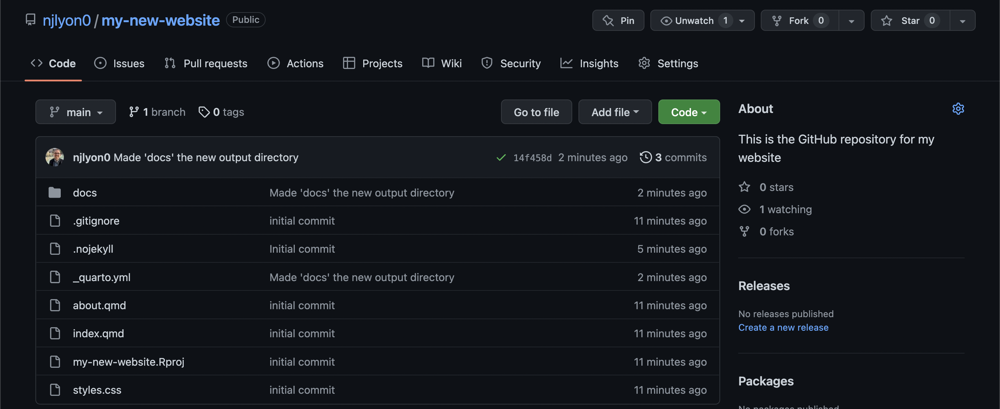
Deploy Website via GitHub
In order to get your new website actually on the web, we’ll need to tell GitHub that we want our website to be accessible at a .github.io URL.
To do this, go to the “Settings” tab with a gear icon and click it. You may be prompted to re-enter your GitHub password, do so and you can proceed.
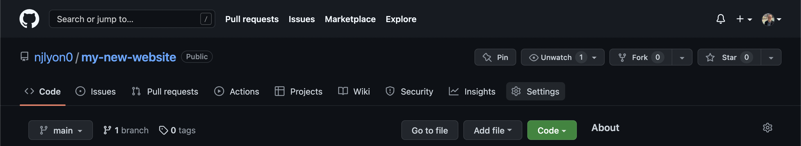
In the resulting page, look towards the bottom of the left sidebar of settings categories and click the “Pages” option. This is at the very bottom of the sidebar in the screen capture below but is towards the middle of all of the settings categories Github offers you.
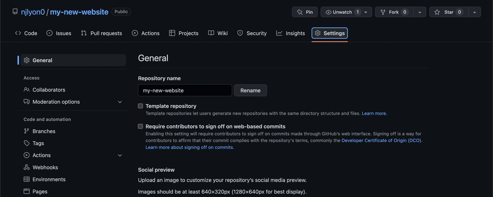
Scroll down to the middle of this page and where it says “Branch” click the dropdown menu that says “None” by default.

Select “main” from the dropdown.
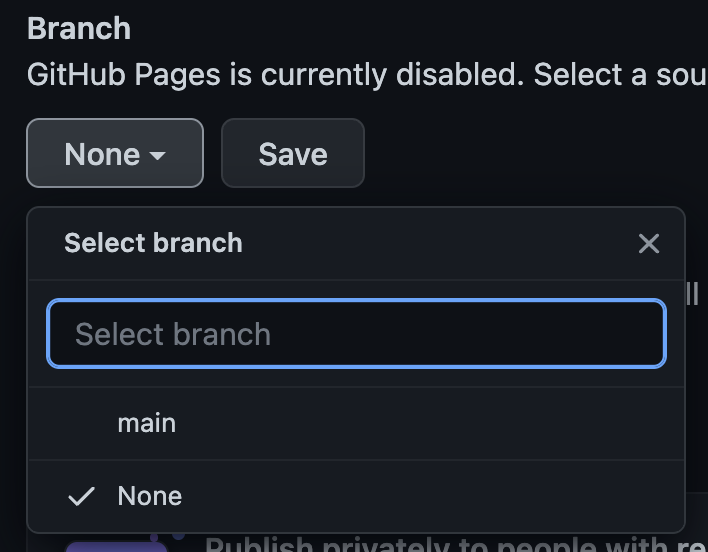
This opens up a new dropdown menu where you can select which folder in your repository contains your website’s content (it defaults to “/ (root)”). Because we specified output-dir: docs in the .yml file earlier we can select “/docs” from the dropdown menu.
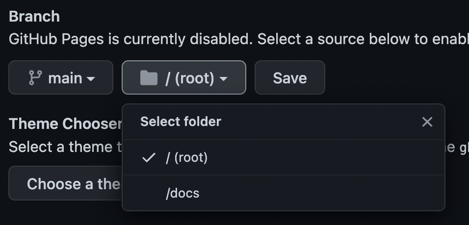
Once you’ve told GitHub that you want a website generated from the “docs” folder on the main branch, click the “Save” button.
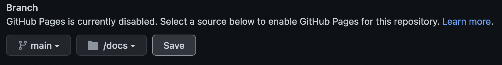
From this moment your website has begun being deployed by GitHub! You can check the status of the building process by navigating to the “Actions” tab of your repository.
Select the “pages build and deployment workflow” in the list of workflows on the bottom righthand side of the page.

This shows you GitHub’s building and deployment process as a flowchart. While it is working on each step there will be an amber circle next to the name of that sub-task. When a sub-task is completed, the amber circle becomes a green circle with a check mark.
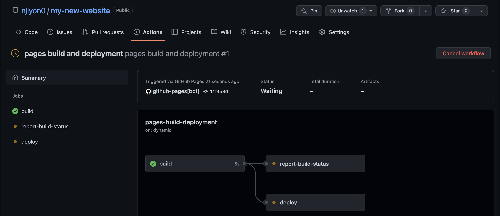
When the three steps are complete the amber clock symbol next to the “pages build and deployment” action will turn into a larger green circle with a check mark. This is GitHub’s way of telling you that your website is live and accessible to anyone on the internet.
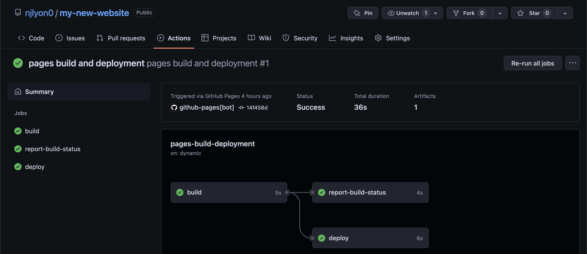
You can now visit your website by visiting its dedicated URL. This URL can be found by returning to the “Settings” tab and then scrolling through the sidebar to the “Pages” section.
Alternately, the website for your repository always uses the following composition: https://repository owner.github.io/repository name/
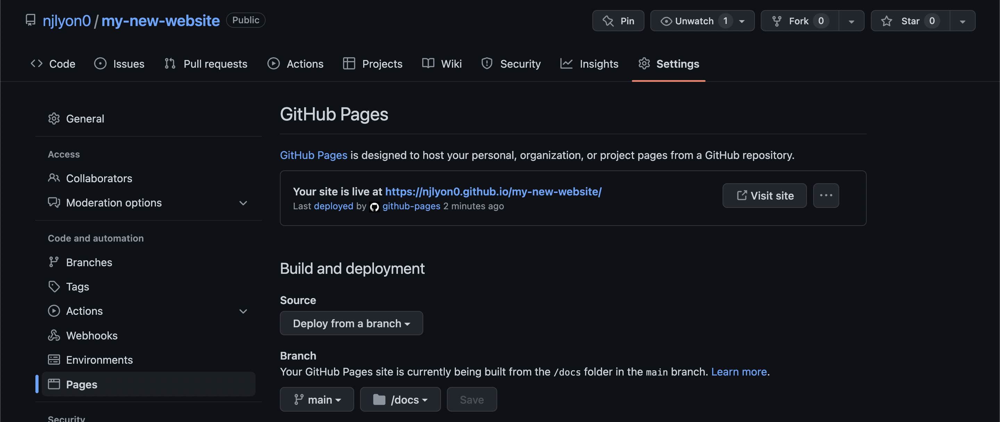
If we visit that link, we can see that our website is live!
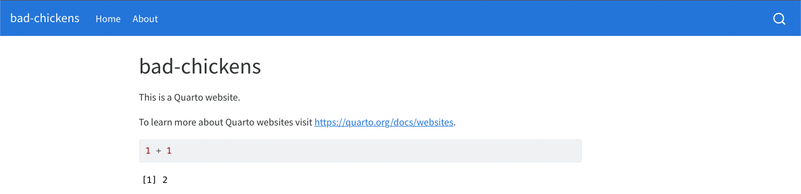
GitHub Housekeeping
We recommend a quick housekeeping step now to make it easier to find this URL in the future. Copy the URL from the Pages setting area and return to the “Code” tab of the repository.
Once there, click the small gear icon to the right of the “About” header.
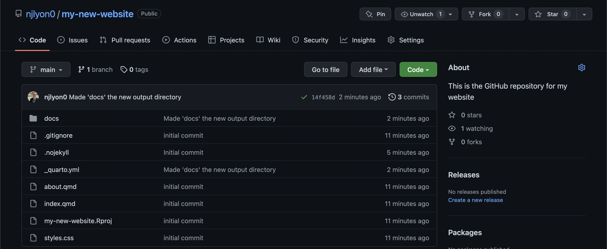
In the resulting window, paste the copied URL into the “Website” field. Once you’ve pasted it in, click the green “Save changes” button.
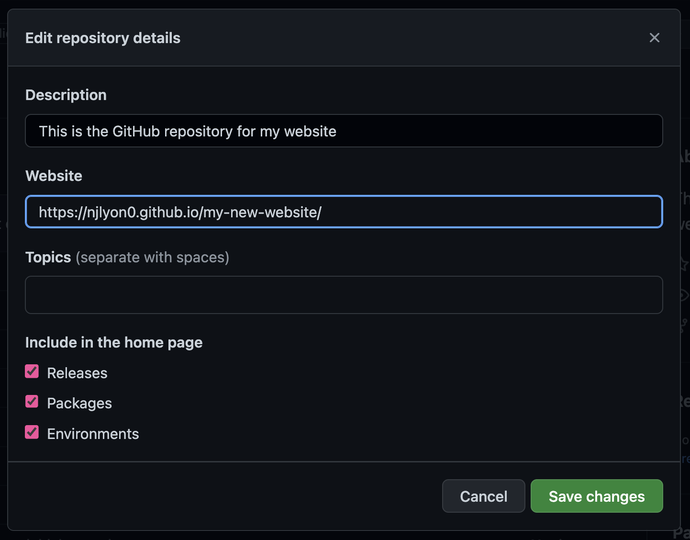
This places the link to your deployed website in an intuitive, easy-to-find location both for interested third parties and yourself in the future.
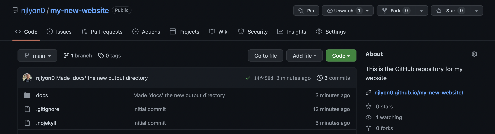
Adding Website Content
Now that you have a live website you can build whatever you’d like! Given the wide range of possibility, we’ll only cover how to add a new page but the same process applies to any edit to the living webpage.
To add a new page create a new Quarto document. You can do this by going to the “File” menu, entering the “New File” options, and selecting “Quarto Document…”
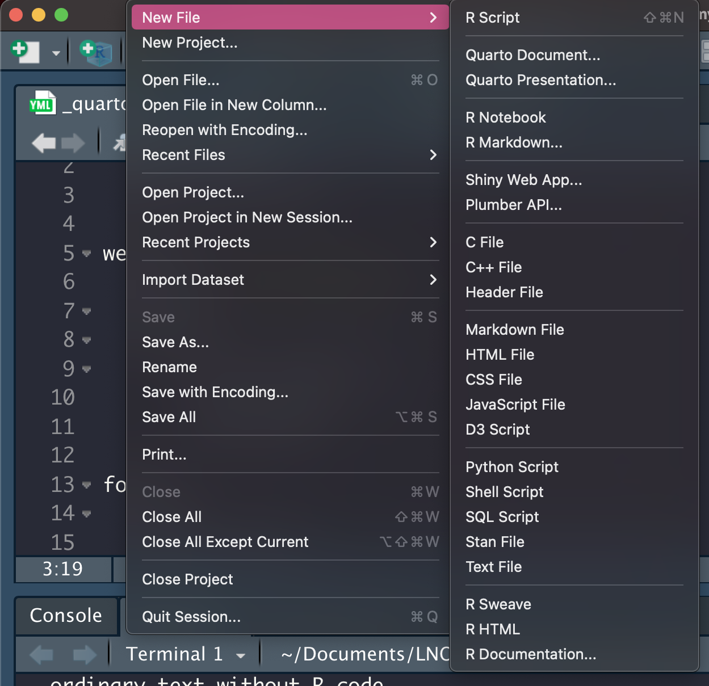
Similarly to an R markdown file, this will open a new window that lets you enter a title and author as well as decide what format you want to render files to along with some other settings options. You only need to click the “Create” button in the bottom right of this dialogue (though you can definitely play with the other options and text boxes as you desire).
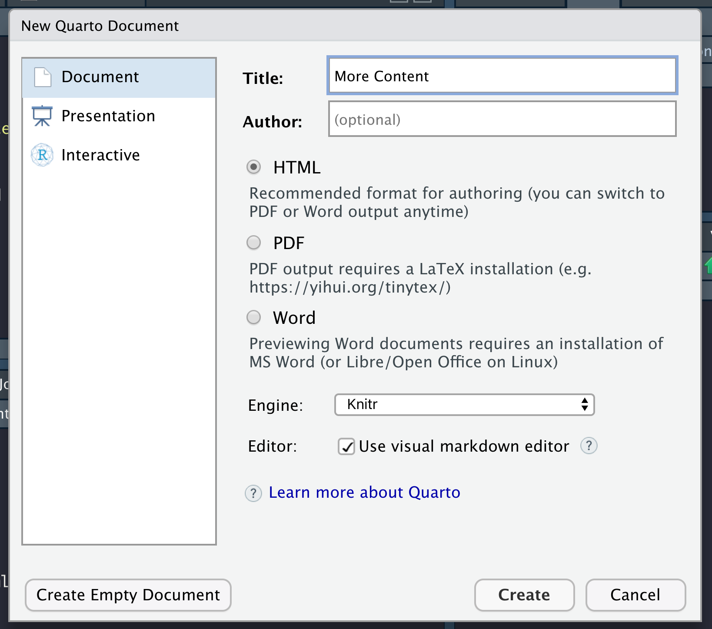
After a moment, a new .qmd file will open in Quarto’s visual editor. For the purposes of this tutorial, you only need to add a title in the top of the file but for a real website you can add whatever content sparks joy for you!
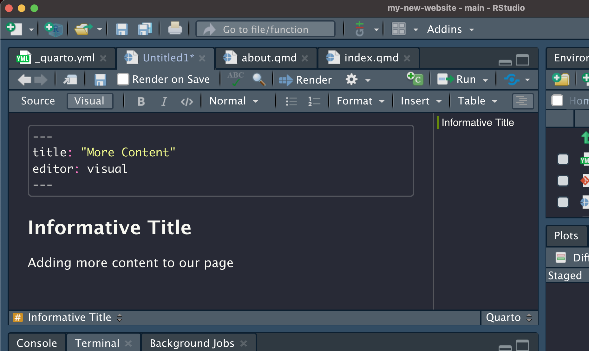
Save that file into your project folder. Its name can be anything but be sure that you remember what you name it!
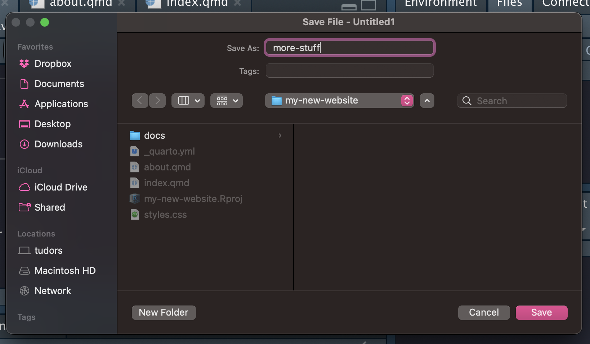
Add the name of the new Quarto document to the .yml file in the website navbar area (in this example the file is called “more-stuff.qmd”).
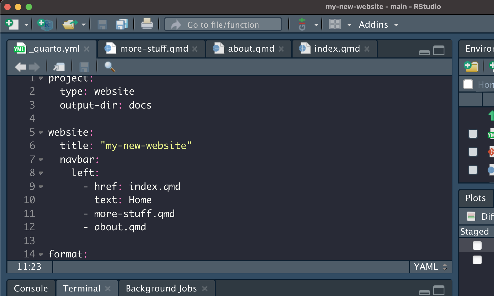
Once you’ve added the file to the fundamental architecture of your website, you need to tell Quarto to re-build the part of the website that GitHub looks for when it deploys. To do this run quarto render in the Terminal.
If you want to preview your changes, run quarto preview in the Terminal and a new browser window will be displayed showing your current website content. This preview continues until you click the red stop sign icon in RStudio so be sure to end it when you’re done with the preview!
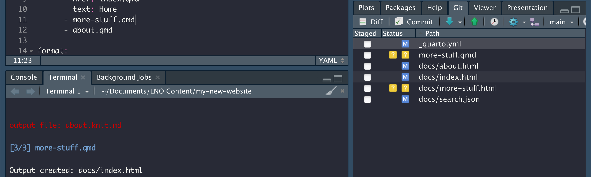
Regardless, once you’ve run either quarto render or quarto preview you need to stage and commit all changed files indicated in the Git pane of RStudio. As a reminder, to stage files you check the box next to them, to commit staged files, type an informative message and press the “Commit” button in the right side of the window.
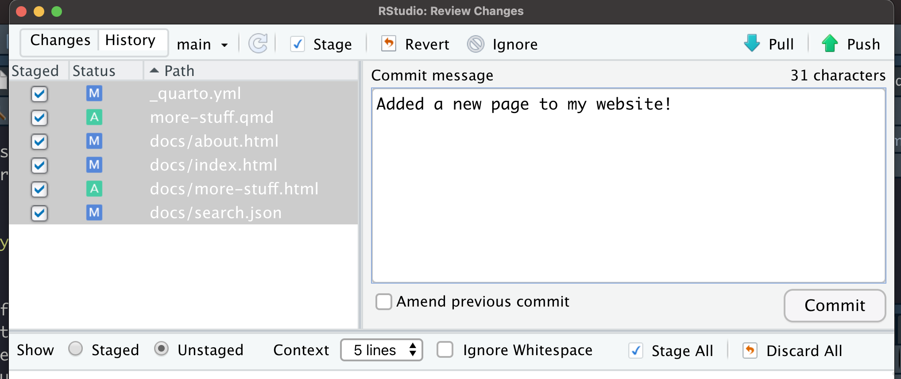
Switch back to GitHub and you’ll see an amber dot next to the commit hash just beneath and to the left of the green “Code” button.
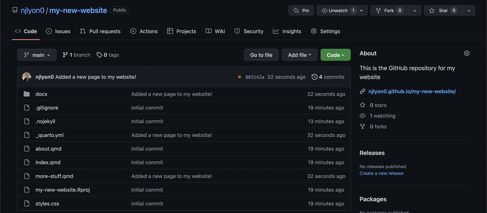
When the amber dot turns into a green check mark that means that your edits to your website are now included in the live version of your site!
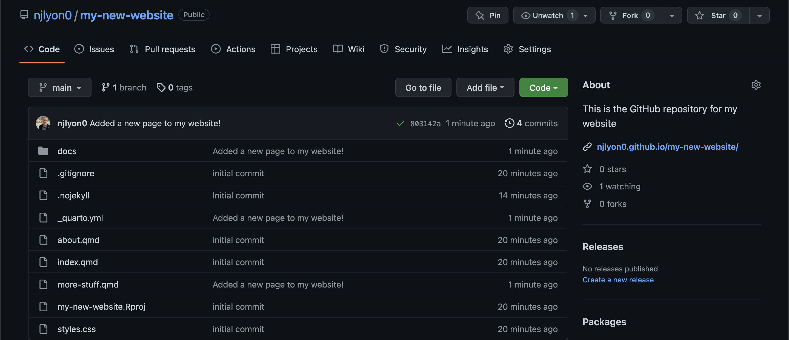
When you visit your website you may need to refresh the page for your edits to appear but all new visitors will see the updated content when they load the page.
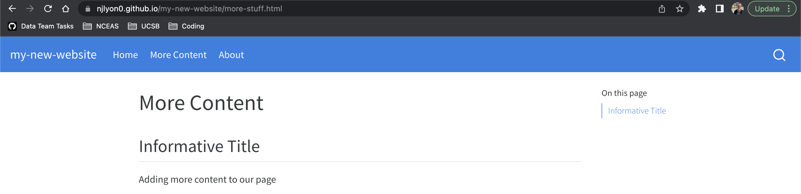
Supplementary Information
Quarto is developing at a rapid pace so quality of life changes and new functionalities are introduced relatively frequently. Additionally, Quarto supports user-created “extensions” that can be downloaded in a given project and then used (similar to the way user-developed R packages can be shared) so if you want to do something that Quarto itself doesn’t support, chances are you’ll be able to find an extension that handles it.
Quarto’s documentation of website creation and formatting is extremely thorough and is a great resource as you become more comfortable with your new website. We hope this tutorial was useful to you and welcome constructively critical feedback! Please post an issue with any thoughts for improvement that you have.